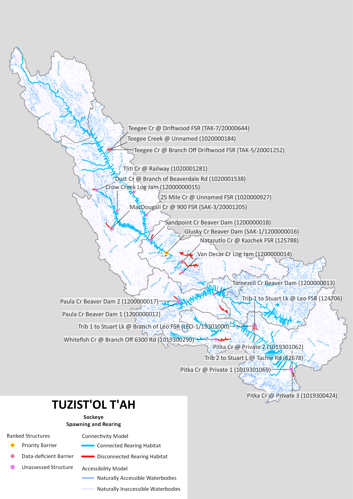
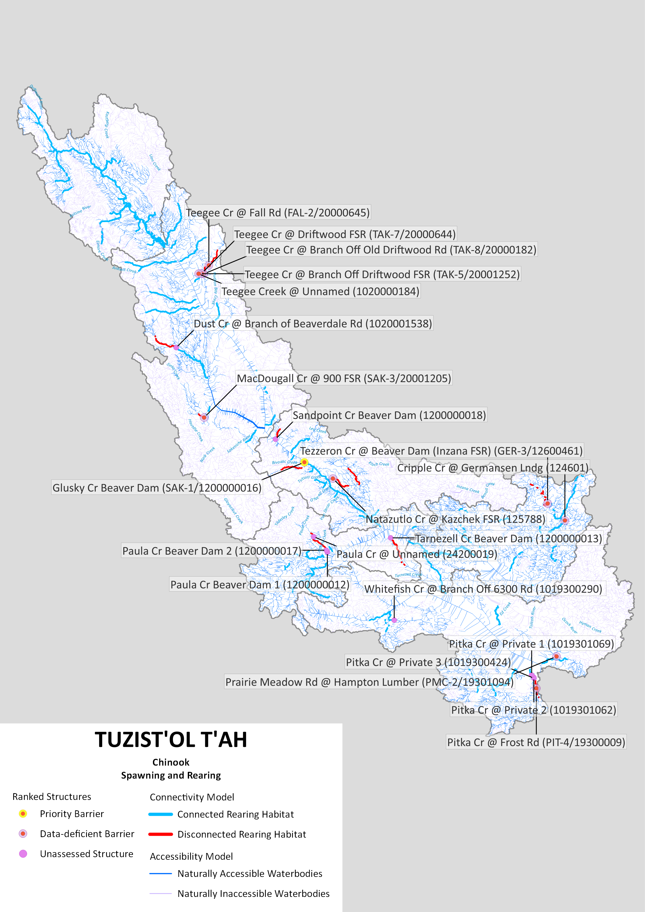

Barrier ID | Site Name | Structure Status | Structure Rank | Average Habitat Upstream of Structure (km) | Actual Habitat Upstream of Structure (km) |
|---|---|---|---|---|---|
125788 | Natazutlo Cr @ Kazchek FSR (125788) | Unassessed structure | 1 | 23.410000 | 23.41 |
1019300290 | Whitefish Cr @ branch off 6300 Rd (1019300290) | Unassessed structure | 2 | 2.136667 | 4.78 |
1200000013 | Tarnezell Cr beaver dam (1200000013) | Unassessed structure | 3 | 2.136667 | 0.31 |
203995 | MacDougall Cr @ 900 FSR (SAK-3/20001205) | Unassessed structure | 4 | 2.136667 | 1.32 |
1200000018 | Sandpoint Cr beaver dam (1200000018) | Unassessed structure | 5 | 1.110000 | 0.12 |
1019301069 | Pitka Cr @ Private 1 (1019301069) | Unassessed structure | 6 | 0.330000 | 0.33 |
1019301062 | Pitka Cr @ Private 2 (1019301062) | Unassessed structure | 6 | 1.120000 | 1.12 |
1019300424 | Pitka Cr @ Private 3 (1019300424) | Unassessed structure | 6 | 3.170000 | 3.17 |
1020001538 | Dust Cr @ branch of Beaverdale Rd (1020001538) | Unassessed structure | 7 | 2.610000 | 0.87 |
1200000012 | Paula Cr beaver dam 1 (1200000012) | Unassessed structure | 8 | 16.500000 | 16.50 |
1200000017 | Paula Cr beaver dam 2 (1200000017) | Unassessed structure | 8 | 2.760000 | 2.76 |
1200000014 | Van Decar Cr log jam (1200000014) | Unassessed structure | 9 | 0.100000 | 0.10 |
62678 | Trib 2 to Stuart L @ Tachie Rd (62678) | Priority barrier | 10 | 2.710000 | 2.71 |
124706 | Trib 1 to Stuart Lk @ Leo FSR (124706) | Unassessed structure | 10 | 2.610000 | 4.35 |
1200000016 | Glusky Cr beaver dam (SAK-1/1200000016) | Unassessed structure | 11 | 4.530000 | 4.53 |
1020001281 | Tliti Cr @ Railway (1020001281) | Data-deficient barrier | 12 | 2.280000 | 2.70 |
1020000184 | Teegee Creek @ unnamed (1020000184) | Data-deficient barrier | 13 | 58.850000 | 58.85 |
204010 | Teegee Cr @ Branch off Driftwood FSR (TAK-5/20001252) | Data-deficient barrier | 13 | 0.100000 | 0.14 |
1020000927 | 25 Mile Cr @ Unnamed FSR (1020000927) | Data-deficient barrier | 14 | 0.100000 | 0.06 |
1200000015 | Crow Creek log jam (12000000015) | Data-deficient barrier | 15 | 0.250000 | 0.25 |
203990 | Trib 1 to Stuart Lk @ Branch of Leo FSR (LEO-1/19301000) | Data-deficient barrier | 16 | 5.600000 | 5.60 |
203987 | Trib 1 to Stuart Lk @ Branch of Leo FSR (LEO-2/19300003) | Data-deficient barrier | 17 | 0.020000 | 0.02 |
203986 | Trib 1 to Stuart Lk @ Branch off Leo FSR (LEO-3/19302252) | Data-deficient barrier | 17 | 1.110000 | 2.10 |
204008 | Teegee Cr @ Driftwood FSR (TAK-7/20000644) | Data-deficient barrier | 18 | 2.280000 | 1.86 |
Current Connectivity Status
In the Tuzist’ol T’ah watersheds, 3996.06 km of Talo habitat are currently connected to the ocean and 137.95 km are disconnected from it. This means that 96.7% of the 4134.02 km of total habitat is connected.
In the Tuzist’ol T’ah watersheds, 678.76 km of Chinook Salmon habitat are currently connected to the ocean and 91.16 km are disconnected from it. This means that 88.2% of the 769.92 km of total habitat is connected.
Structure Count
In the Tuzist’ol T’ah watersheds, 24 structures potentially disconnect Talo habitat and 22 structures potentially disconnect Chinook Salmon habitat.
Maps


Habitat Accumulation Curves

Habitat Accumulation Summary Table

Barrier ID | Site Name | Structure Status | Structure Rank | Average Habitat Upstream of Structure (km) | Actual Habitat Upstream of Structure (km) |
|---|---|---|---|---|---|
125788 | Natazutlo Cr @ Kazchek FSR (125788) | Data-deficient barrier | 1 | 0.4200 | 0.42 |
1020001538 | Dust Cr @ branch of Beaverdale Rd (1020001538) | Unassessed structure | 2 | 2.1675 | 4.78 |
1200000016 | Glusky Cr beaver dam (SAK-1/1200000016) | Priority barrier | 3 | 2.1675 | 0.31 |
1200000013 | Tarnezell Cr beaver dam (1200000013) | Unassessed structure | 4 | 2.1675 | 1.32 |
1020000184 | Teegee Creek @ unnamed (1020000184) | Unassessed structure | 5 | 2.8060 | 0.12 |
204010 | Teegee Cr @ Branch off Driftwood FSR (TAK-5/20001252) | Data-deficient barrier | 5 | 10.1500 | 10.15 |
204008 | Teegee Cr @ Driftwood FSR (TAK-7/20000644) | Data-deficient barrier | 5 | 1.6900 | 1.69 |
1200000035 | Teegee Cr @ Branch off Old Driftwood Rd (TAK-8/20000182) | Data-deficient barrier | 5 | 4.1550 | 0.86 |
203996 | Teegee Cr @ Fall Rd (FAL-2/20000645) | Data-deficient barrier | 5 | 8.8600 | 8.86 |
1200000012 | Paula Cr beaver dam 1 (1200000012) | Unassessed structure | 6 | 9.3100 | 9.31 |
1200000017 | Paula Cr beaver dam 2 (1200000017) | Unassessed structure | 6 | 4.1550 | 7.45 |
1200000034 | Tezzeron Cr @ Beaver dam (Inzana FSR) (GER-3/12600461) | Data-deficient barrier | 7 | 4.7300 | 4.73 |
1200000018 | Sandpoint Cr beaver dam (1200000018) | Unassessed structure | 8 | 4.8500 | 4.85 |
1019301069 | Pitka Cr @ Private 1 (1019301069) | Unassessed structure | 9 | 2.8060 | 4.23 |
1019301062 | Pitka Cr @ Private 2 (1019301062) | Unassessed structure | 9 | 0.6500 | 0.65 |
1019300424 | Pitka Cr @ Private 3 (1019300424) | Unassessed structure | 9 | 16.0700 | 16.07 |
204001 | Pitka Cr @ Frost Rd (PIT-4/19300009) | Data-deficient barrier | 9 | 2.4000 | 2.40 |
203995 | MacDougall Cr @ 900 FSR (SAK-3/20001205) | Data-deficient barrier | 10 | 2.8060 | 6.74 |
204004 | Prairie Meadow Rd @ Hampton Lumber (PMC-2/19301094) | Data-deficient barrier | 11 | 2.1675 | 2.26 |